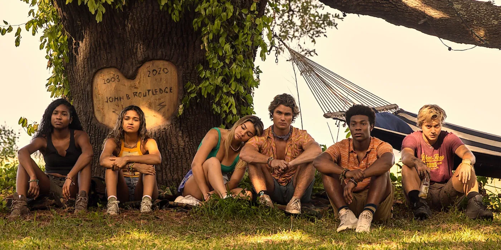

Entre em uma ilha onde há ricos e pobres, aproveite a sessão.
Outer Banks acompanha um grupo de adolescentes da Carolina do Norte, mais conhecidos como "Pogues". John B (Chase Stokes) é o líder da gangue e passa seu tempo livre surfando e curtindo sua juventude.